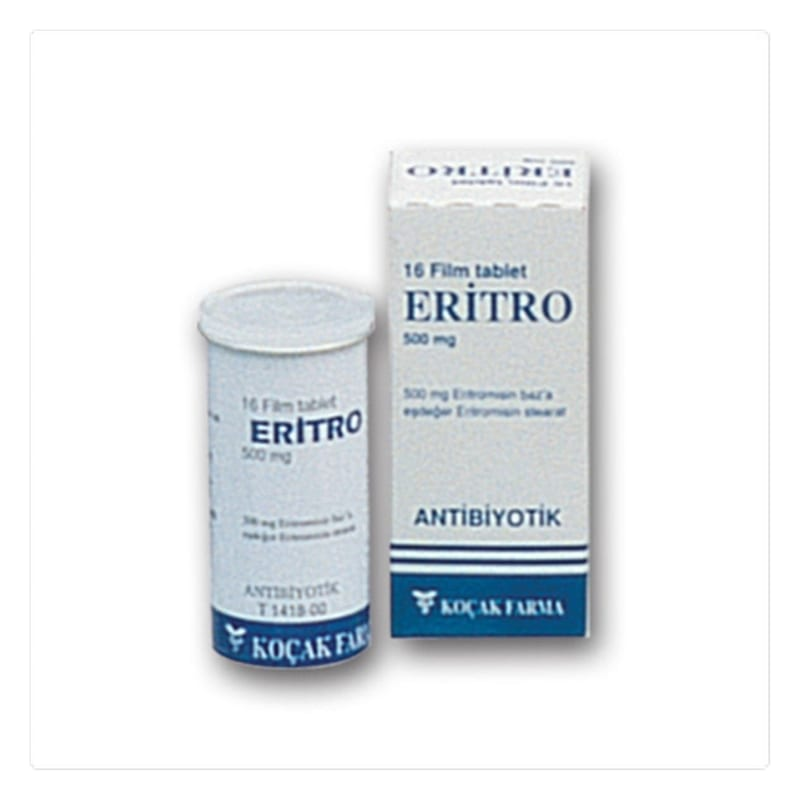

Eritro 500 mg Film Tablet, 16 Adet

Ne için kullanılır
KT · Bölüm 1ER İTRO, eritromisin stearat içerir. Eritromisin, makrolid antibiyotikler adı verilen bir antibiyotik grubuna aittir.
ER İTRO, bir yüzünde "ER-500" diğer yüzünde "KOÇAK" yazılı, beyaz, oblong, çentikli 16 film kaplı tablet içeren polietilen kapaklı amber renkli cam şişelerde piyasaya verilmiştir. İki eşit doza
bölünebilir niteliktedir.
ER İTRO, aşağıdaki enfeksiyonların önlenmesi ve tedavisinde kullanılmaktadır;
• Boğaz ve sinüs enfeksiyonları • Akciğer enfeksiyonları, örneğin bronşit ve pnömoni (zatürre) • Kulak enfeksiyonları • A ğız ve diş enfeksiyonları • Göz enfeksiyonları • Deri ve doku enfeksiyonları, örneğin akne • Mide ve barsak enfeksiyonları • Yanıklar, ameliyatlar, romatizmal ateş, bakteriyel kalp içi zarı iltihabı veya dental işlemler gibi enfeksiyonun önlenmesi • Di ğer enfeksiyonlar, örneğin cinsel yolla bulaşan hastalıklar, kemik enfeksiyonları veya kızıl hastalığı